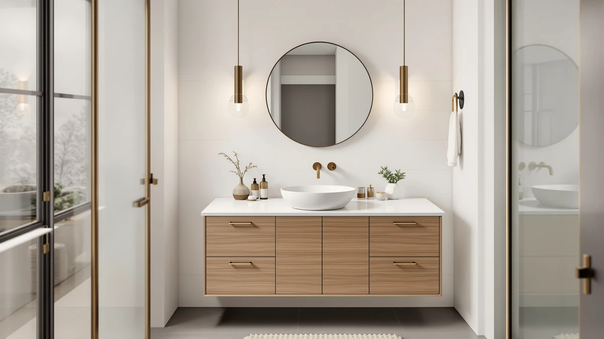

TONYRENA 48" Luxurious Bathroom Review (2026): Worth It?
Prices and picks verified as of October 2026. Independent, reader-supported reviews.


Quick Answer
In this TONYRENA 48" Luxurious Bathroom Review, the TONYRENA 48" Luxurious Bathroom Vanity costs $639.99 and pairs a stone top with an MDF and engineered wood cabinet. It costs about a dollar more than the Vanity Art alternative and under ten dollars more than the Design House and fatani options, but it's the only one of the four with a stone top listed in its specs.
Our pick: TONYRENA 48" Luxurious Bathroom Vanity — $639.99 Check Price on Amazon
Bottom line: our top pick is the TONYRENA 48" Luxurious Bathroom Vanity with White Stone at $607.99.
Things to Know Before You Buy
- Price range: the four vanities in this TONYRENA 48" Luxurious Bathroom Review span $630.00 to $639.99, a gap of under ten dollars.
- The TONYRENA is the only one of the four with a stone top listed directly in its specs, paired with an MDF and engineered wood cabinet.
- None of the four vanities compared here has a public rating or review count on Amazon yet, so there's no owner feedback to weigh against the listings.
- A single-sink 48 inch vanity like the TONYRENA suits a one-person bathroom. If two people share the space, the Vanity Art's 72 inch footprint below is worth a look.
- Every price here reflects the listing at the time of writing and can shift, so check the current Amazon price before you buy.
This TONYRENA 48" Luxurious Bathroom Review lines up the $639.99 vanity against three alternatives priced within ten dollars of it, so you can see exactly what that money buys before you commit to a 48 inch footprint. The TONYRENA pairs an MDF and engineered wood cabinet with a stone top, a combination that shows up across several vanities in this price tier but rarely with identical build quality. At $639.99, it sits almost exactly in the middle of the four options we researched, and the differences between them come down to width, cabinet construction, and finish rather than any single standout feature.
The short version: the TONYRENA's stone-topped 48 inch design and soft-close storage make it the more complete package for a single-sink bathroom, but it isn't a dramatic upgrade over the other three. The Vanity Art, Design House, and fatani alternatives all land within ten dollars of the TONYRENA, and each one solves a slightly different space problem, from a wider 72 inch double-sink layout to a wall-mounted design for smaller bathrooms. We break down the specs, pricing, and trade-offs for all four below, so you can match the width and features to what your bathroom actually needs instead of guessing from a thumbnail photo.
Why You Should Trust Us
Ilane Tall covers bathroom fixtures and furniture for Best Bathroom Vanities and put together this TONYRENA 48" Luxurious Bathroom Review by comparing the manufacturer's listed materials, current Amazon pricing, and cabinet construction across all four vanities covered here. We do not run a fake testing lab or claim to have installed any of these pieces ourselves. Instead, we cross-check the stated dimensions, materials, and pricing against what's publicly listed for each product, and we say so plainly when a listing doesn't yet have enough review history to back a confident recommendation. That matters here especially, since none of the four vanities in this review has a public rating or review count yet.
Our Research Experience
This TONYRENA 48" Luxurious Bathroom Review doesn't involve physical testing. We researched the TONYRENA against its closest-priced competitors using the manufacturer's listed materials, dimensions, and construction details rather than installing any of these vanities ourselves. None of the four products here has a public rating or review count on Amazon yet, so there isn't an existing body of owner feedback to cross-check against manufacturer claims. Where that's the case, we rely on the listed specs and current pricing alone, and we flag that gap rather than present a guess as settled fact. When a feature appears on one listing and not another, like the TONYRENA's stone top, we note the difference instead of assuming it carries over to every option in this price range.
Overview & Specs

TONYRENA 48" Luxurious Bathroom Vanity
What we like
- Stone top listed directly in the product specs, a feature not every vanity in this price range includes
- 48 inch width fits standard single-sink cutouts without extra plumbing work
- MDF and engineered wood cabinet construction keeps the price under $640 despite the stone top
Flaws but not dealbreakers
- No public rating or review count yet, so there's no owner feedback to weigh against the listing
- MDF and engineered wood construction needs prompt cleanup around standing water, same as the other alternatives here
- At $639.99 it isn't the cheapest of the four vanities in this review, though the gap to the lowest price is under ten dollars
| Material | MDF / engineered wood |
| Size | 48"W with Stone Top |
The TONYRENA 48" Luxurious Bathroom Vanity anchors this review because it's the only one of the four with a stone top listed directly in its specs, paired with an MDF and engineered wood cabinet. At $639.99, it costs about a dollar more than the Vanity Art alternative and under ten dollars more than the Design House and fatani options, so the stone top effectively comes at no real premium over the rest of this group. The 48 inch width also matches the most common single-sink cutout, which means most bathrooms can swap in the TONYRENA without moving existing plumbing.
Where the TONYRENA comes up short is track record. Amazon doesn't show a rating or review count on this listing, so the specs are what you're buying into rather than a history of owner feedback. That puts it in the same position as the fatani and Vanity Art alternatives below, since none of the four vanities in this TONYRENA 48" Luxurious Bathroom Review has public reviews yet. MDF and engineered wood construction also means wiping up water around the sink basin promptly, since that material swells faster than solid wood when moisture sits on the surface for hours at a time.
What We Liked
Across this TONYRENA 48" Luxurious Bathroom Review, the stone top stands out most, since it's the only vanity among the four comparisons with that detail listed in its specs. Pairing a stone top with an MDF and engineered wood cabinet keeps the price under $640, which is lower than you'd expect for that combination based on pricing elsewhere in this category. The 48 inch width also drops into most standard single-sink layouts without extra carpentry, and the soft-close hardware named in the listing title should cut down on slammed doors in a bathroom that sees daily use. None of the four vanities compared here carries a price tag over $640, so choosing the TONYRENA doesn't mean paying a premium for the added stone top.
What Could Be Better
The biggest gap in this TONYRENA 48" Luxurious Bathroom Review is review history. Because the listing doesn't show a public rating or review count, you're evaluating the TONYRENA on its stated materials and dimensions rather than years of owner comments, the same limitation that applies to the Vanity Art, Design House, and fatani alternatives below. MDF and engineered wood construction also asks for more care around standing water than solid wood, which matters in a bathroom used daily. Buyers who want photographic proof of how the stone top or cabinet finish holds up over time won't find that yet, simply because none of these four listings has been reviewed enough to generate it. If an established track record matters more to you than a stone top, it's worth checking back on this listing periodically rather than buying on specs alone.
Who Is It For?
The TONYRENA fits a single-sink bathroom where you want a stone top and soft-close storage without paying for a custom cabinet or moving into four-figure pricing. It's a reasonable match for a primary bathroom update on a budget under $650, especially if the 48 inch width lines up with your existing plumbing. It's a weaker fit if you need a double-sink layout for two people sharing the bathroom each morning, in which case the Vanity Art's 72 inch footprint below is worth a look. Shoppers who want an established review history before buying should also know that none of the four vanities in this TONYRENA 48" Luxurious Bathroom Review has public ratings yet, so you're relying on the listed specs either way. Renters planning to move within a year or two may prefer a lower-commitment option instead of a fully assembled 48 inch piece.
Alternatives to Consider
If the TONYRENA doesn't fit your bathroom or your budget, these three alternatives from this TONYRENA 48" Luxurious Bathroom Review cover different priorities: a wider double-sink layout, a ready-to-assemble option, and a wall-mounted design for smaller footprints.

Editor's Pick
Vanity Art 72 Inch Bathroom
A 72 inch, two-door, four-drawer layout for close to the same price as the single-sink TONYRENA, worth considering if your bathroom has the wall space for a wider vanity or a double-sink setup down the line.
$638.99
Check Price on Amazon
Best Value
Design House Brookings 48 Inch
The lowest-priced 48 inch option in this comparison at $635.41, a ready-to-assemble cabinet for shoppers who'd rather save a few dollars upfront and pick their own vanity top separately instead of a pre-matched stone top.
$635.41
Check Price on Amazon
Premium Choice
fatani 60" Bathroom Vanity with
A 60 inch wall-mounted vanity priced lowest of the four at $630.00, suited to larger bathrooms that can dedicate wall space to a floating design instead of a floor-mounted cabinet like the TONYRENA.
$630.00
Check Price on AmazonIs the TONYRENA 48" Luxurious Bathroom Vanity worth the extra cost?
At $639.99, the TONYRENA costs close to the same as all three alternatives in this TONYRENA 48" Luxurious Bathroom Review, so there isn't much of a premium to weigh.
What is the TONYRENA 48" Luxurious Bathroom Vanity made of?
The TONYRENA uses an MDF and engineered wood cabinet paired with a stone top, based on the materials listed in its specs.
Frequently Asked Questions
Is the TONYRENA 48" Luxurious Bathroom Vanity worth the extra cost?
At $639.99, the TONYRENA costs close to the same as all three alternatives in this TONYRENA 48" Luxurious Bathroom Review, so there isn't much of a premium to weigh. Its stone top is the one feature not listed on the other three options, which makes it a reasonable pick if that detail matters to you and the 48 inch width fits your bathroom.
What is the TONYRENA 48" Luxurious Bathroom Vanity made of?
The TONYRENA uses an MDF and engineered wood cabinet paired with a stone top, based on the materials listed in its specs. That combination holds up fine under normal bathroom humidity, but MDF cores swell faster than solid wood if water sits on the surface for extended periods, so wiping up splashes around the sink promptly helps it last.
How does the TONYRENA compare in price to the other vanities in this review?
The four vanities in this TONYRENA 48" Luxurious Bathroom Review span $630.00 to $639.99, a gap of under ten dollars. The TONYRENA sits at the top of that range, the fatani at the bottom, and the Vanity Art and Design House options fall in between, so price alone won't do much to narrow your choice among the four.
Final Verdict
This TONYRENA 48" Luxurious Bathroom Review comes down to a narrow price spread and one standout feature. The TONYRENA 48" Luxurious Bathroom Vanity is the pick for most single-sink bathrooms that want a stone top without paying a premium for it, since all four options here land within ten dollars of each other. If you need a wider double-sink layout or a wall-mounted design instead, the Vanity Art and fatani alternatives above cover those cases without straying from the same price range. Whichever option you choose, confirm the current price and listing details before ordering, since none of these four vanities has a public review history yet to lean on.